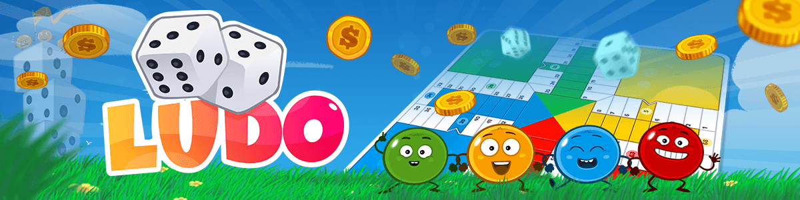

Welcome to Ludo!

Rules To Play Ludo
Use these rules to break records onto top position:
Objective
- Each player has 4 pawns of the same color and a starting box called home on the board.
- The board has 68 numbered boxes, 8 of them are safe zones, where any pawn can be placed.
- Every player also has 7 boxes before the goal box, where only the player’s pawns can travel.
- These boxes have the same color as the player’s pawns.
- The game’s objective is to be the first one to move all of your pawns from your home to your goal.
How To Play
- Roll the dice. The players can draw a pawn from home only when they roll a 6.
- Once your pawn is out of home, each time you roll the dice any pawn out of home can be moved as per the number on dice.
- If you roll 6, you get another chance to roll the dice.
- These boxes have the same color as the player’s pawns.
- The player has move all the pawns to the goal and hence, he/she wins the game.
Barriers and Captures
- You’ll form a barrier whenever two pawns get in the same box. The barriers prevent other pawns to pass over, so any of them can be captured.
- If the player rolls 6 he/she will have to break the barrier.
- If you roll 6, you get another chance to roll the dice.
- To capture an other player’s pawn you’ll need to put one of your pawns in the same box, unless it is a safe box.
- The captured pawn will return home and the player who captured it will have to move one of his/her pawns 20 boxes whenever possible.
Getting to the Goal
- If a pawn travels arround the whole board it arrives to the goal.
- To enter a pawn to the goal, you have to roll the exactly number of moves. At the arrival boxes before the goal, a pawn can’t be killed.
- The winner is the first player who gets all of his/her 4 pawns to goal.